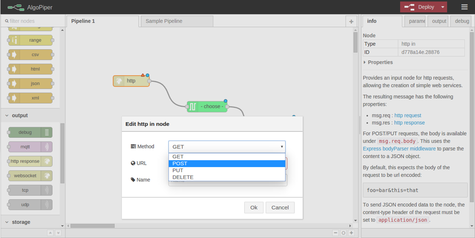

User Guide¶
Note
You can skip reading this section and learn to use AlgoPiper through an interactive step-by-step tutorial by the online instance of AlgoPiper

Figure 1 - AlgoPiper Interface. (1) Main workspace to create a pipeline. (2) Pipelines are arranged into tabs. Click ‘+’ to add more pipelines. (3) Input node: represents input data to the pipeline. (4) Output node: is used to preview the output of the pipeline. (5) AlgoRun node: represents individual algorithms packaged using AlgoRun. (6) A tab to present detailed information about a selected node. (7) A tab to modify AlgoRun node parameters <algorithm parameters>. (8) A tab to present results from the output node. (9) A tab to present log information from debug node. (10) Deploy button to build a pipeline after creation.
1. Create Pipelines¶
To create a pipeline, drag and drop nodes from the left-side bar. A basic pipeline contains the following nodes:
- Input node: is used to upload data to the pipeline. Drag an input node to the main workspace. Double click on the node to type data in the input dialog or upload a file.
Figure 2 - Input node dialog
- AlgoRun node(s): each AlgoRun node represents an algorithm ready to be run on a given input. The input is passed to the node from the left. The output from the node is produced toward the right. Drag an AlgoRun node into the main workspace. Double click on the node to select an algorithm from the list.
Figure 3 - AlgoRun node dialog
On the right sidebar, there are more tabs that show information about the selected algorithm:
- Info tab: shows algorithm description, input and output formats, and a reference to the algorithm page.
- Parameter tab: shows algorithm parameters that can be changed dynamically.
- Output node: previews the output from the pipeline in the output tab on the right.
Connect the input node to the AlgoRun node by clicking on the small dot on the right of the input node to the small dot on the left of the AlgoRun node. Similarly, connect the small dot on the right of the AlgoRun node to the small dot on the left of the output node. After creating the pipeline, hit deploy on the top-right corner.
2. Run Pipelines¶
To run a pipeline, click on the small button on the left of the Input node. This will trigger the pipeline by passing the input to the next node (after the Input) in the pipeline. Output appears in the output tab on the right sidebar.

Figure 4 - Run a pipeline and preview output
Note
If you cannot find the algorithm you are looking for, follow the guide on http://algorun.org/documentation to package it into an AlgoRun container. Submit the packaged algorithm to AlgoRun website http://algorun.org/submit-algorithm and it will automatically appear in the ‘choose’ list of the AlgoRun node.
3. Integrate Pipelines¶
After creating and testing the pipeline on some arbitrary data, integrate it into other software tools by adding an HTTP endpoint node before the first node in the pipeline (replacing the Input node) and an HTTP response node after the last node in the pipeline (replacing the output node). See the below images for an example.
Figure 5 - Integrating a pipeline by adding an HTTP endpoint
4. Share Pipelines¶
Select all pipeline nodes in the main workspace (ctrl+A), click on the top-right menu and choose to export to clipboard. The pipeline is exported into a JSON format.

Figure 6 - Export a pipeline for sharing
5. Submit Your Pipeline (Optional)¶
If you built your pipeline with AlgoPiper and want to share it publicly, do not hesitate to submit it for listing on the AlgoPiper website. The AlgoPiper website serves as a repository for all computational pipelines that were exported from AlgoPiper: http://algopiper.org
To submit your pipeline for listing, fill the form located at http://algopiper.org/submit-pipeline